The Loom UI is the browser-based management interface for a Loom server. It is a single-page application (React, Vite and Material UI) that is bundled into the Loom server itself — no separate deployment is required. Everything you can do through the REST API — browsing assets, chatting with the AI agent, authoring pipelines, managing users, roles and API keys — is available from the UI.
The screenshots below are taken from the demo container, which ships with a pre-seeded database so every screen has real content.
|
Tip
|
Start the demo container and open |
What the UI Offers
The collapsible left navigation groups every screen into three sections — AI, Content and Management — so it is always clear whether you are steering the agent, working on media, or operating the installation.
AI
-
Chat — a conversational assistant with live references to your assets, tasks and pipelines
-
Chat Sessions — durable, publishable records of past conversations, with the context and skill versions they ran with
-
Skills — versioned instruction packages the chat agent can apply per conversation
-
Memory — browse and edit the scoped markdown notes the agent reads and writes
Content
-
Search — one search box above the navigation that looks across every kind of content at once
-
Library — browse assets grouped into libraries
-
Assets — grid/list browser with search, status and type filters, plus a rich per-asset detail view
-
Uploads — multi-file drag-and-drop ingest with per-file progress that keeps running in the background
-
Collections — organise assets into colour-coded collections, and share one with somebody outside your installation (see Sharing)
-
Remixes — group the versions of one piece of work into a single card in the asset grid (see Remixes)
-
Tasks — a Kanban-style task board with priority, status, due dates and per-asset tasks
-
Detection — review face, object and LLM detections; manage face clusters and persons
-
Tags — manage tags grouped by collection
-
Workflow — fullscreen, keyboard-driven bulk review: rating and tagging, the duplicate review queue and confirming what a model found
Management
-
Asset Pools — storage pool management and replication
-
Pipelines — a visual pipeline editor with versioning and side-by-side version diffs
-
Cortex — live monitoring of connected Cortex worker daemons
-
Monitoring — rolling metrics dashboards
-
Spaces — tenant/project separation
-
Indices — the state of the search, face and duplicate indices, with reindex and sync controls. See Search Indices
-
Database Integrity — an on-demand report on the consistency rules the database cannot enforce by itself. See Database Integrity
-
Memory Denylist — regex guardrails for what the agent may never store
-
ACL — a sub-group holding Users, Groups, Permissions, API Keys and Blacklist, i.e. every screen that decides who may do what
Your First Steps
A brand-new Loom instance starts out empty, and the UI is built to guide you through that first hour rather than show you blank screens.
-
A personal welcome — starting a new conversation greets you by name and explains, in one line, what the agent can do for you. The greeting disappears as soon as you send your first message.
-
Guided empty pages — every feature page (Assets, Library, Collections, Tags, Tasks, Skills, Asset Pools) shows a large icon, a short explanation of what the feature is for, and a single button that creates the first element — upload your first asset, create your first collection, write your first skill, and so on.
Once a page has content, the empty state is replaced by the regular browser; if a search or filter returns nothing, you get a distinct "no matches" hint instead, so an empty result is never confused with an empty feature.
Getting to the documentation from where you are
Most screens carry a small ? beside their heading. Hovering it tells you which part of this manual the screen is covered by; clicking it opens that section in a new tab, so nothing you have in progress is disturbed.
The icon knows what you are looking at, not just which page you are on. On Workflow it follows the review mode you have selected — rating, duplicates or model output each land on their own section — and on Detection it follows the tab.
|
Note
|
The icons point at An installation with no route to the public internet can be pointed at a mirror of this documentation instead. That address is fixed when the interface is built rather than at runtime, so it is a decision for whoever builds your image, not a setting on the server. |
Chat & AI Agent
The landing screen is the Loom Agent chat. Ask questions in natural language and the agent works across your assets, collections, tasks and pipelines. A context panel on the right surfaces recent assets, active tasks and collections, and past conversations are listed for quick recall.
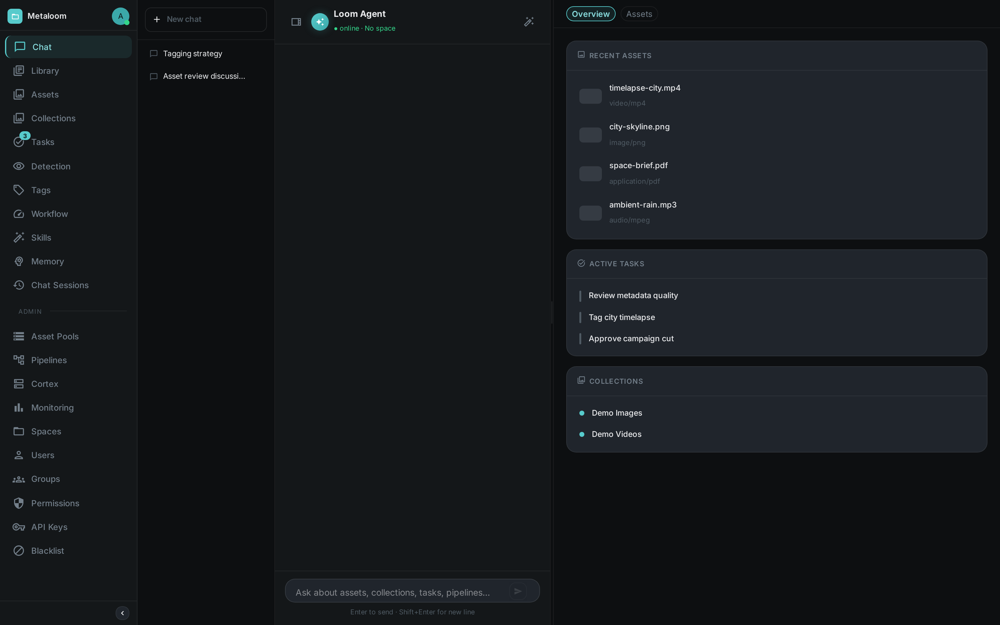
Chat Sessions
A conversation can be captured as a chat session: a named, describable record that survives the chat itself. Publishing a session makes it available as context for later conversations — a new session can pull in another session’s chat history, its skills, or its coding-sandbox filesystem, each toggled separately. Sessions also pin the exact skill versions they ran with, so a shared session stays reproducible after the underlying skills move on.
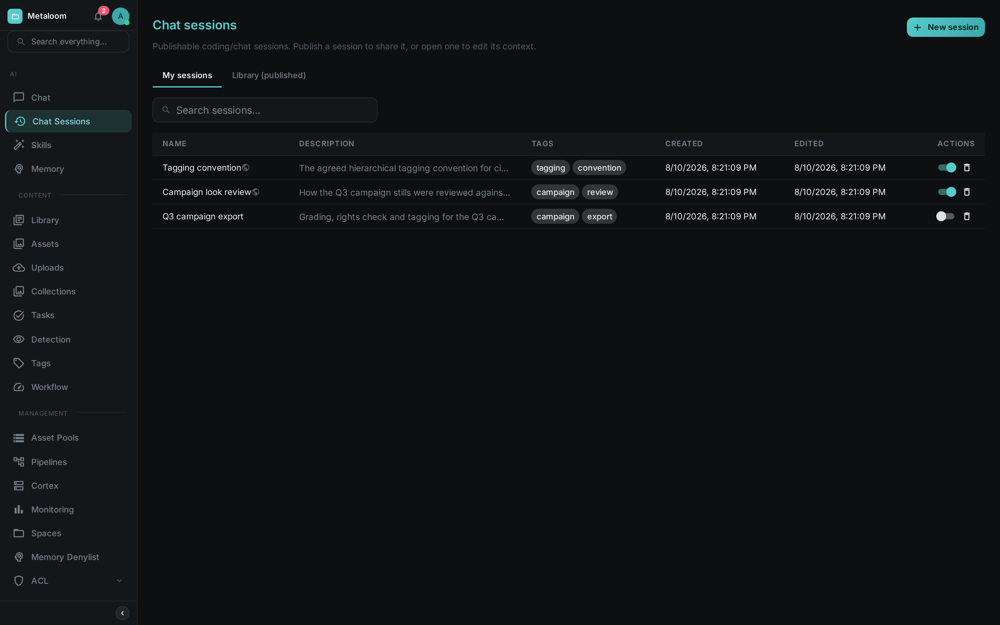
Skills
Skills are versioned, publishable instruction packages that the agent can apply on a per-conversation basis. Your own skills live under My skills; shared skills are installed from the Library.
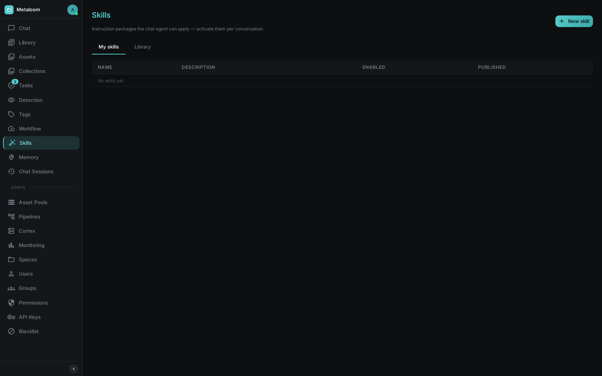
Agent Memory
The agent keeps a scoped, markdown-based memory bank that it can read and write across conversations.
The memory view lets an administrator browse and edit those notes; the agent sees it as a read-only
/memory folder.
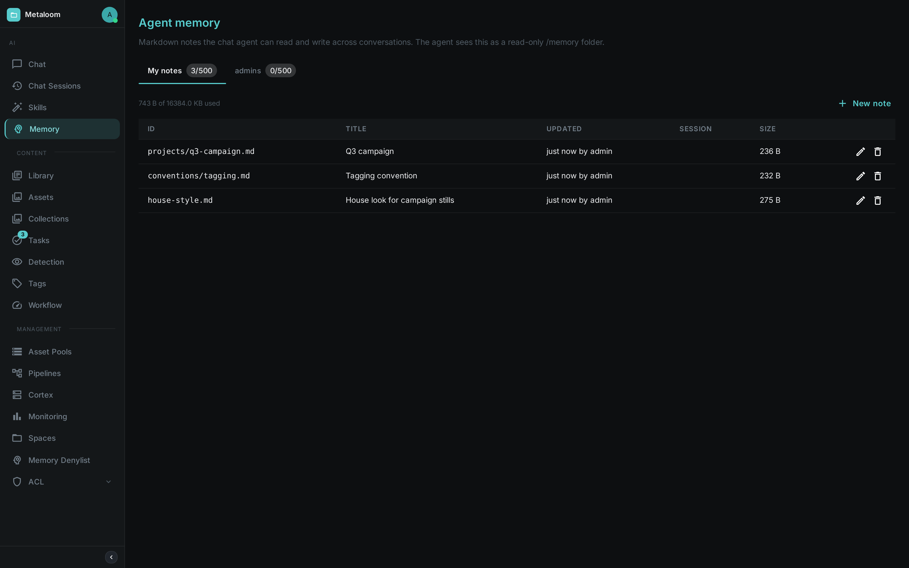
Search
The search box sits at the top of the left navigation and is available from every screen. Unlike the filter boxes inside individual screens — which narrow the list you are already looking at — this one queries the whole installation: asset filenames and metadata, transcript text, tag and collection names, annotations, people and libraries, all in a single pass.
The two boxes that search media — the one above the asset browser and the one above a library — are the same search, simply narrowed: they look through everything in the catalogue, or everything in that library, rather than through the assets that happen to be on screen. So a term finds the same material wherever you type it.
Start typing and suggestions appear after the second character. Press Enter to open the full results page, where each hit shows what kind of thing it is and a short excerpt with your search terms highlighted. Transcript hits carry the timecode where the phrase was spoken. Selecting a result takes you to the asset or the screen that holds it.
Refining a Search
The results page offers three ways to narrow what you get back:
-
Kind — chips for assets, transcripts, tags, annotations, people, collections, libraries and clusters. Pick one or several; picking none searches everything you are allowed to see.
-
Suggested filters — file type, kind and language chips generated from the results themselves, each showing how many matches it accounts for.
-
Sort — by relevance (the default), newest, oldest, name or size.
Active filters are listed together above the results so you can always see what is being excluded and remove it in one click.
Search Syntax
The search box understands three operators, which can be combined freely:
| Syntax | Meaning |
|---|---|
|
Text in double quotes matches only where those words appear together, in that order. |
|
|
|
A leading hyphen excludes matches. This example finds documents about the quarterly update but leaves out anything mentioning the podcast. |
Punctuation that is not one of these operators is simply treated as text, so a stray quote or bracket never turns into an error.
|
Note
|
Search results respect your permissions. If your account cannot read a particular kind of content, those results are left out and a note above the results says so — rather than silently returning less than you asked for. |
Searching by Meaning
If your administrator has enabled it, the results page offers a second and third way to search, shown as Lexical, Semantic and Hybrid next to the search box. If you do not see those buttons, only the word matching described above is available on your installation.
-
Lexical is the default and the one described above: it finds the words you typed.
-
Semantic finds material that is about what you typed, whether or not it uses the same words. Searching for
bicyclewill turn up a clip whose transcript only ever says "cycling", and a search forwinter holidaycan surface footage described as "snow, cabins and mulled wine". -
Hybrid runs both and merges the two rankings. Material that both agree on rises to the top. This is usually the one you want: it keeps the precision of an exact word match while still catching the things worded differently.
A semantic result has no highlighted excerpt, because there is no matching word to highlight — it is marked as a meaning-based match instead. Result counts are approximate in these two modes: both rankings are cut off at a fixed depth, so the number shown describes the best matches rather than every document in the catalogue.
Semantic search reads the text Loom holds about an asset — transcripts, extracted text, captions, tags and filenames. It cannot yet find a photo purely from what is depicted in it if nothing has ever been written or transcribed about that photo.
|
Note
|
Newly added material becomes findable by meaning a short time after it is imported, because each item has to be processed once before it can be matched this way. Word search is available immediately. An administrator can see how many items are still waiting. |
When Search Is Turned Off
Search is optional, and an administrator can disable it or point Loom at a search backend that is not running. When that happens the search box does not appear at all, and the search page explains which backend is configured and why it cannot answer. Every other part of Loom keeps working normally — a search outage never takes the rest of the application with it.
Assets
The asset browser shows every asset with search, status and type filters and switchable grid/list and card-size views. Videos, images, audio and documents are all represented.
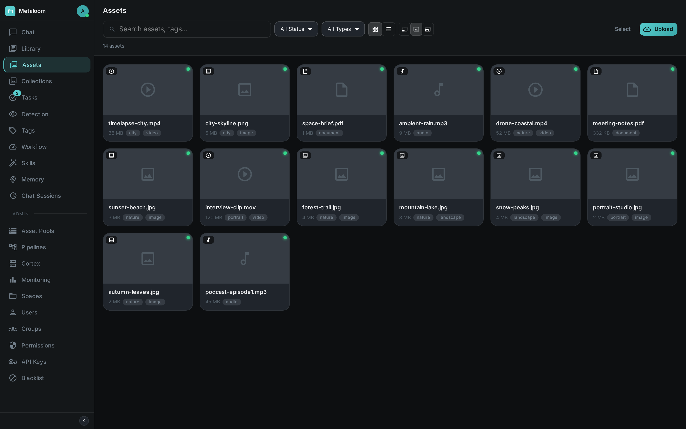
Narrowing and ordering a list
The toolbar above the assets — and above the collections, in the same shape — lets you cut the list down and choose how it reads:
-
Collection shows only the assets that belong to one collection.
-
Created by shows only what a particular person added.
-
Type narrows to video, image, audio or documents.
-
Sort by orders the list by Name, Created or Last edited, and the arrow beside it switches between ascending and descending.
Filters combine, so picking a collection and a person shows the assets that are in that collection and were added by that person. The Clear filters chip beside the count resets them; your chosen order stays, since that is how you are reading the list rather than a restriction on it.
Sorting and filtering are applied by the server across the whole catalogue, not just the part already on screen — so ordering a collection of fifty thousand assets by name really does start at the beginning of the alphabet, and the Showing X of Y footer keeps counting the full match.
Lists are ordered oldest-first by default. That is deliberate: something you have just created turns up at the end of the list, where you would look for it, instead of somewhere in the middle.
The same toolbar appears on collections, tags, libraries, asset pools, tasks, skills, chat sessions and the administration tables, with the filters each screen can usefully offer — tasks add Status and Priority, users add Enabled, skills add Enabled and, in the shared library, Created by.
Every screen that lists things has a search box, including the ones you might not think to look on: the chat rail on the home screen, the upload queue, the node pickers in the pipeline editor, and the storage, index and integrity pages under Administration.
|
Tip
|
A video or audio transcript has its own Find in transcript box. It highlights every match and dims the sections without one, rather than hiding them — the section timeline stays intact so you can still see where in the recording you are. |
|
Tip
|
Typing in the search box switches the asset browser over to full-text search, which ranks results by relevance. The sort and creator controls step aside while a search term is active, because relevance is the ordering at that point — clear the box to go back to browsing. |
Opening an asset reveals the detail view: media preview, a timeline with markers, tags and metadata, and tabs for comments, annotations and reactions.
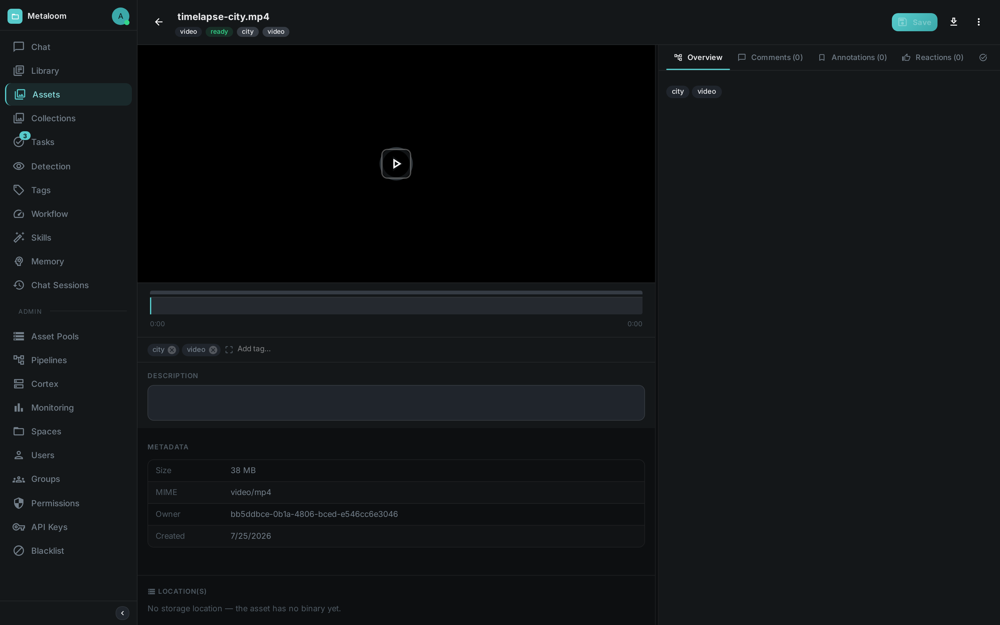
Uploads
The Uploads screen is the place to bring media into Loom. Drag a whole selection of files onto the drop area, or click it to pick them — there is no one-file-at-a-time limit.
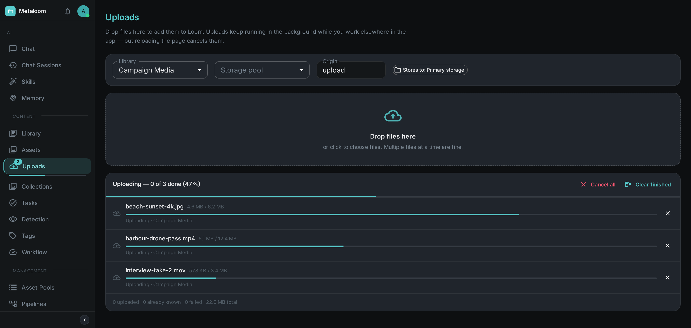
Choosing where the files land
Every upload has to land in a library, which you choose before adding files. The library also decides where the bytes are physically stored, and the chip beside the selectors names that destination — Stores to: Primary storage above — so there is never any doubt about where a file went. Administrators additionally get a storage pool selector to send a particular batch somewhere else — an archive bucket, say — without changing the library itself; the chip then names the pool you picked instead.
The Origin field is a free-text label recorded with each asset, describing where the material came
from. It defaults to upload; change it to something like client-handoff or shoot-2026-08 and the
whole batch is tagged with it.
Watching a batch run
Loom transfers three files at a time and starts the next one as soon as a slot frees up, so a large selection queues up rather than competing for the same connection. Files still waiting are listed as Waiting until their turn comes.
Each file gets its own progress bar and the bytes sent so far, and the bar across the top of the list is the progress of the batch as a whole — weighted by file size, so a single large file is not drowned out by a handful of small ones. A file can be cancelled on its own with the ✕ beside it, or the whole batch with Cancel all.
Anything that fails says why in place of its status line and offers a retry, so a failed upload never means picking the file again; Retry failed puts every failure back in the queue at once. Uploading the same content twice is not an error either: Loom recognises content it already holds and links it to the existing asset instead of creating a duplicate, and the row says so rather than reporting a problem. Clear finished tidies away everything that has settled and leaves whatever is still running alone.
|
Note
|
A bar reaches 100% when the last byte has been sent. The server still has to hash and store the file after that, so a large upload pauses briefly at full before it turns green. That pause is the server finishing its work, not a stalled transfer. |
Uploads keep running while you work
Uploads are not tied to the screen that started them. Leave it and the Uploads entry in the navigation carries a count of what is still in flight plus a thin progress bar, which is the ambient signal that work is happening somewhere behind the page you are on:
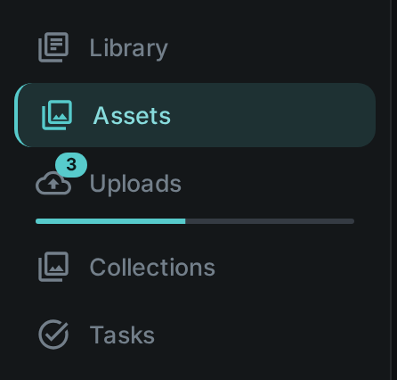
A short message tells you when the batch finishes, how many files were already known, and whether anything failed. The upload dialog in the asset browser feeds the same queue, so a batch started there behaves identically and shows up in the same place.
Reloading the browser page is the one thing that cancels an upload in progress — the files only exist in the page until they have been sent — so the application warns you before that happens.
Library
Assets can be organised into libraries. The library view provides a per-library selector and an asset grid that previews the stored image binaries; formats a browser cannot decode — video, audio, documents — keep their type icon.
The box above the grid searches the whole of the selected library, not only the assets already loaded into the page, and it counts the matches for you. The term you typed is part of the address, so a filtered library can be sent to a colleague as a link and the browser’s Back button returns you to the unfiltered view. Switching library re-runs the same term against the one you switched to. If your installation has search turned off, the box still narrows what is on screen and says that it is only doing that.
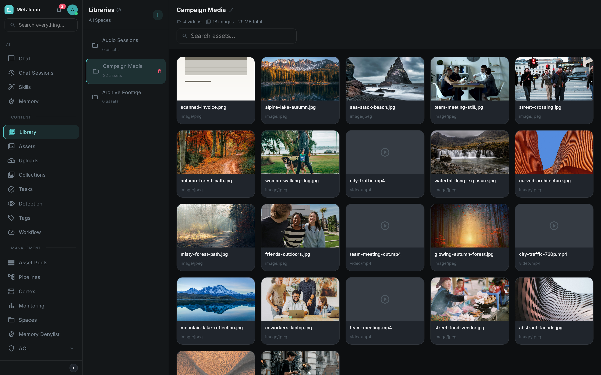
Tags
Tags are managed in a tree grouped by collection, with drag-to-move and inline creation.
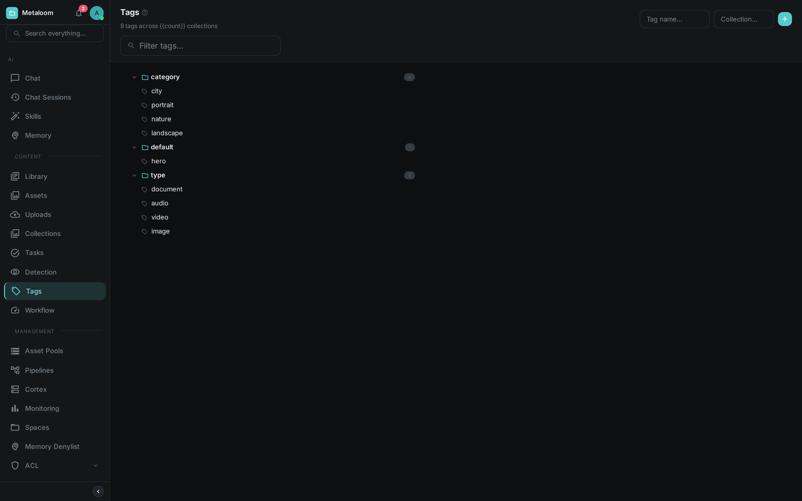
Tasks
Work is tracked as tasks with a priority, a status and a due date. A task can be attached to the asset it is about, in which case it also shows up in the Tasks tab of that asset’s detail view.
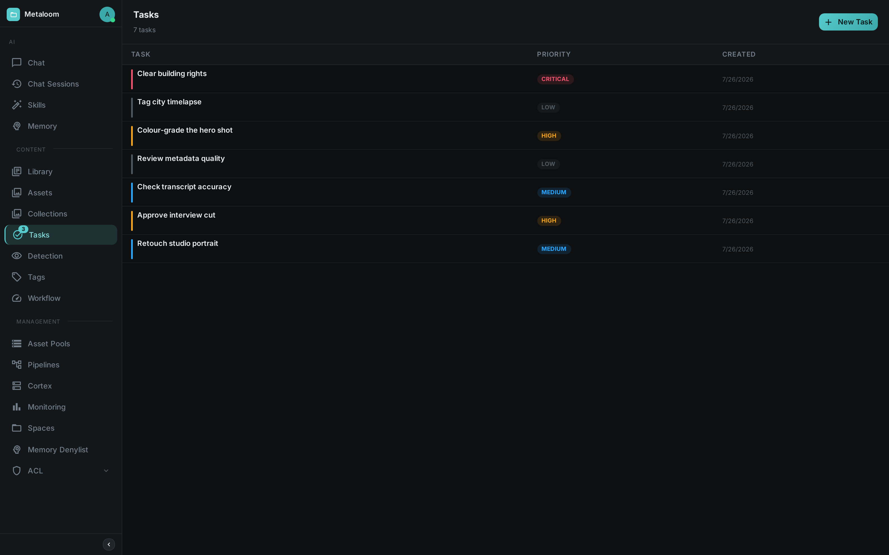
Assigning work
A task can be assigned to individual people, to whole groups, or to any mix of the two. Pick the assignees when you create the task, or add and remove them later from the edit panel. Assignees appear as avatars on the task board and on the asset the task belongs to.
Assigning to a group does not freeze who is in it. The group’s current members are responsible for the task, so somebody who joins the team afterwards inherits the work without anyone having to reassign it.
Everyone you assign is told about it — see Notifications.
Notifications
The bell at the top of the sidebar is your inbox. It carries a badge with the number of unread entries and opens a list of what has happened to you:
-
a task was assigned to you, or taken off you — directly or through a group you belong to
-
a task you are responsible for changed status
-
somebody commented on a task you own or are assigned to
-
somebody replied to one of your comments
-
a pipeline run you started failed
Entries arrive live, without reloading the page, and a short message appears in the corner when one does. Clicking an entry marks it read and takes you to whatever it is about. You can dismiss entries one at a time, mark everything as read, or clear the inbox entirely.
You are never notified about your own actions: assigning a task to yourself, or commenting on your own task, tells nobody. Notifications are private — you only ever see your own.
Face Detection
The Detection view aggregates face, object and LLM detections. The Faces tab is where you turn what the face-detection node found into people you have named.
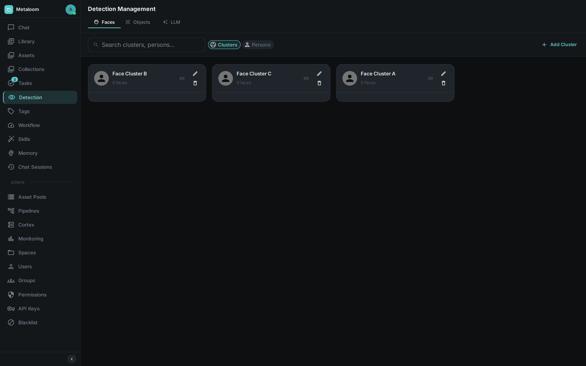
Reviewing a group of faces
When Face Detection runs over an asset it sorts the faces it found into groups — one per person it believes is present — and leaves each group pending. Nothing is attributed to anybody until you say so.
Each card shows how many faces are in the group and the actual cropped faces themselves, so you can tell at a glance whether the grouping is right before deciding anything. From there you either confirm the group onto a person — somebody already in your list, or a new one created on the spot — or reject it if it is not a person worth keeping.
Confirming is a real, saved decision, not a view setting: it survives reloading the page, and it survives the asset being processed again. Re-running face detection updates the boxes and vectors and leaves your verdicts untouched, so a group you confirmed last month is still confirmed afterwards.
What the grouping does and does not mean
Faces are grouped within a single asset. Confirming a group means "this person appears in this video", not "the software now recognises this person everywhere". The same person in a second video comes back as a separate group with no memory of the first, and you confirm it again. Recognising somebody across the whole library is a larger job and is not part of this yet.
A person’s page lists every group confirmed to them, which is how you see where somebody appears across your material.
Face images stay in your deployment
The cropped faces on these cards were cut by the detection node and stored by your own installation. Face images and the vectors derived from them are biometric data; they are never fetched from, or sent to, any outside service.
People and their pictures
Clicking a person’s name opens their own page: everything attributed to them, and the pictures you keep of them.
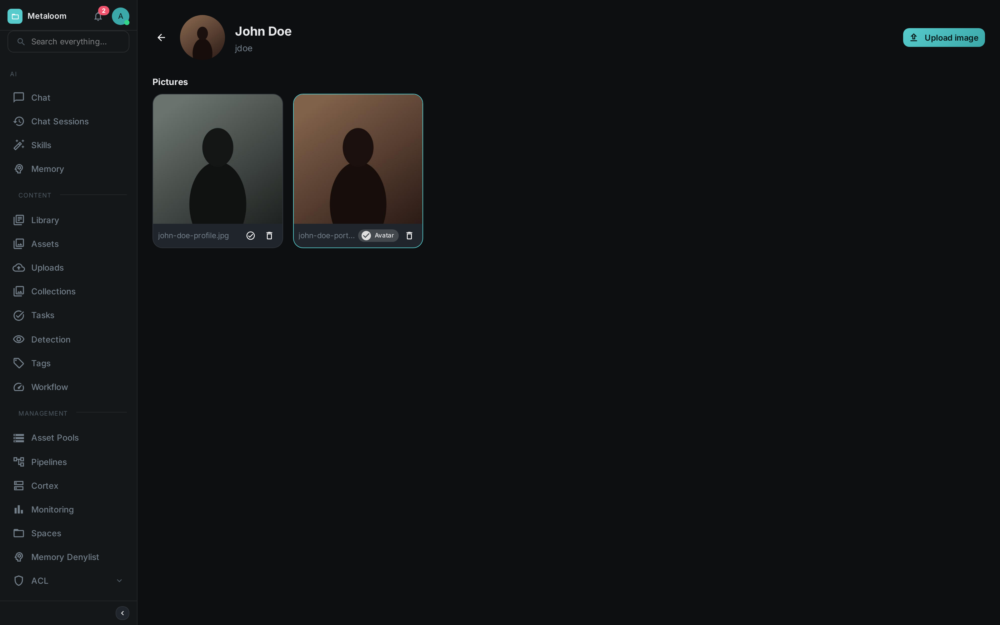
Giving somebody a face
A person starts with no picture and shows as a plain initial wherever they appear. There are two ways to give them one.
Upload a picture. Choose any image from your machine. This is the right choice when you have a proper portrait of somebody and the frames they happen to appear in are not it.
Take one from a group you confirmed. Below the pictures, the page offers the faces from every group confirmed to this person. Clicking one adds it to their pictures. For people who only ever turn up in footage, this is usually the fastest route to a recognisable face — one click, and it is a picture of them rather than of the video they were found in.
Whichever way a picture got there, you can mark any of them as the avatar: the small round image shown beside their name everywhere else. Marking a different one replaces it, and deleting the current avatar simply leaves them without one.
A person’s pictures are their own
These pictures belong to the person, not to the material they came from. Deleting the video somebody was found in — or the whole library it was in — leaves their pictures and their avatar exactly where they were. A face taken from a confirmed group is copied into their keeping at the moment you add it, precisely so that it survives.
They are stored by your own installation like everything else here, and never sent anywhere.
Rating and Tagging at Keyboard Speed
Workflow → Rating and Workflow → Tagging are for working through a set of assets one keystroke
at a time. Press 1 to 9 (and 0 for ten) to rate the asset in front of you; type a word and
press Enter to tag it. The next asset is always one arrow key away.
Both decisions are saved the moment you make them, and both are yours: your rating is your own, and a colleague rating the same asset does not overwrite it.
The tag box offers the tags your instance already uses, so the same idea does not end up spelled three ways. You are not limited to that list — type a word that is not in it and it becomes a new tag.
Two things are worth knowing about what you see on arrival:
-
An asset that already carries a rating or curated tags says so, so you can move past work somebody has already done rather than redoing it.
-
Tags a pipeline attached are shown outlined, with a note of which step attached them and how sure it was. They have no remove button here — undoing what a pipeline decided is a deliberate act, and it belongs on the asset’s own page rather than one keystroke away from a review flow.
If a save fails — a lost connection, or a missing permission — the star or the chip visibly goes back to how it was and a message says so. A screen that looks finished really is.
|
Tip
|
Your decisions follow the file itself, not where it happens to sit. Assets are identified by their content, so moving a file to another folder, renaming it, or scanning it again all keep the rating and the tags it already had. |
Decisions made here are not just a record. A pipeline can route on them: see the Filter node’s Rating and Tag modes for publishing what reviewers rated highly, and finding what nobody has looked at yet.
Reviewing Duplicates
Workflow → Dedup is the queue of near-duplicate videos that a deduplication pipeline has found and nobody has decided on yet. Nothing has been moved at this point: the search only proposes, and your decision is what allows anything to happen to a file.
Each entry shows one group. The file the system suggests keeping is framed in green at the top, and the candidate duplicates sit below it. For every file you get:
-
its name, so you can recognise where it came from
-
its size — the usual reason to disagree with the suggested keeper
-
an Incomplete marker when the file looked truncated at the time it was found, which is what a convincing "duplicate" sometimes turns out to be
-
a score, from 0 to 1, saying how close the match is
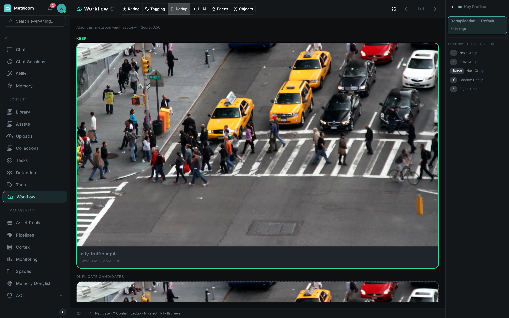
A preview is shown for anything the browser can display — a still for a picture, and a frame from the clip itself for video. Audio and documents have no preview, so those show a placeholder and you decide on the numbers.
Work through the queue with the keyboard:
| Key | Action |
|---|---|
|
Confirm — the duplicates in this group may be cleared away |
|
Reject — leave these files alone, permanently |
|
Move between groups |
|
Fullscreen |
The same two decisions sit under the group as Confirm Dedup and Reject buttons, which is what you use when the cursor is in a text field — the keyboard shortcuts deliberately stand down while you are typing, so they cannot decide a group behind your back.
If you disagree with which file should be kept, press Keep this one on the file you would rather keep. That only changes the choice; it does not decide the group, so you still confirm or reject afterwards.
Every decision is saved as you make it. If saving fails — a lost connection, or a missing permission — the entry visibly goes back to undecided and a message says so, so a queue that looks finished really is.
Rejecting a group is final in a useful way: the next deduplication run will not propose the same set of files again, so the queue does not refill with decisions you have already made.
|
Tip
|
Confirming a group does not itself move anything. The clean-up happens the next time a pipeline with the apply step runs over those files, and it re-checks the file being kept before it touches anything. |
|
Note
|
Opening this queue needs the Deduplication → READ_DEDUP permission, and deciding a group needs UPDATE_DEDUP. Both are granted in the Permissions screen under Administration. |
Reviewing What a Model Found
Workflow → Objects is the queue of things an object-detection pipeline believes it found and nobody has confirmed yet. A detection model is right most of the time and confidently wrong the rest of it, so what it produces is a proposal until somebody says otherwise.
Each box is drawn over the asset and listed below it with the class the model assigned and how sure it was. Select a box and decide:
| Key | Action |
|---|---|
|
Confirm — there really is one of these here |
|
Reject — a false positive |
|
Move between boxes |
|
Move between assets |
Confirmed boxes turn green, rejected ones fade and are marked as such, and anything still undecided stays amber — so at a glance you can see how far through an asset you are.
There is a third answer, and it is the useful one: the box is in the right place but the class is wrong. Correcting the class still counts as a confirmation, because the model did find something there. What the model originally said is kept alongside your correction rather than replaced — that record is what makes the reviewed set worth anything as training material later.
A rejected detection is kept too, rather than deleted. It is the record that the model was wrong about this particular spot, which is also what stops the next run offering you the same box again as though it were new.
Decisions are saved as you make them, in batches, so a fast run of keystrokes is not slowed down by one save per box. If saving fails, the boxes visibly go back to undecided and a message says so.
|
Tip
|
Re-running the same detection pipeline over an asset you have already reviewed does not undo your work — the pipeline updates its own boxes and leaves your verdicts alone. Upgrading to a different version of the detection model does return those boxes to the queue: the new model may have found something different in the same place, so an old verdict is no longer a safe answer to a question that has changed. |
|
Note
|
Opening this queue needs the Detection → READ_DETECTION permission, and deciding a box needs UPDATE_DETECTION. Both are granted in the Permissions screen under Administration. |
Pipeline Editing
Pipelines are authored on a React Flow canvas: drag nodes from the palette, wire typed handles, set PASS/REJECT/ANY edges, validate the graph and run it. An inspector on the right shows metadata and run history, and the JSON tab exposes the raw definition.
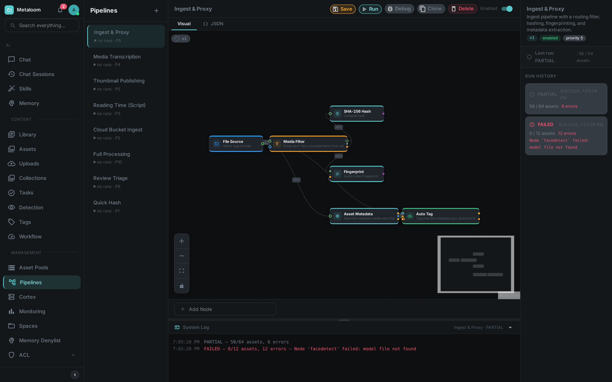
Debugging a Run
A Debug toggle in the toolbar turns the same canvas into a debugger. Each node then shows live counters, and picking a file from the run history paints onto every node the values it emitted for that file — a hash, a transcript, a thumbnail you can actually look at. Clicking any of them opens it full size.
A dot in each node’s left margin halts the run there: the node runs, everything after it waits, and Step then lets one file through at a time. Debug off leaves the editor exactly as it is for authoring. See Pipeline Mechanism — Debug Mode for the full walkthrough with screenshots.
Pipeline Versioning
Every save mints a new pipeline version. The version badge opens a history popover where you can review, restore (copy-forward) or diff any earlier version against the current one.
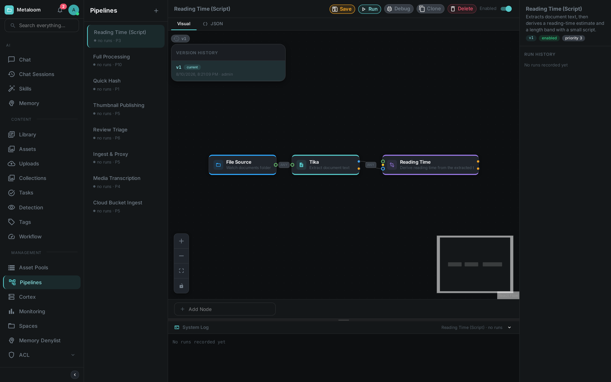
Cortex Instances
The Cortex view monitors the worker daemons connected to Loom. Each registered worker shows its online status, host, priority, live CPU/IO/memory metrics, advertised capabilities and the node kinds it is allowed to run. From here you can pause, resume or forget a worker and edit its node restrictions. Workers appear automatically once a Cortex daemon registers with the server.
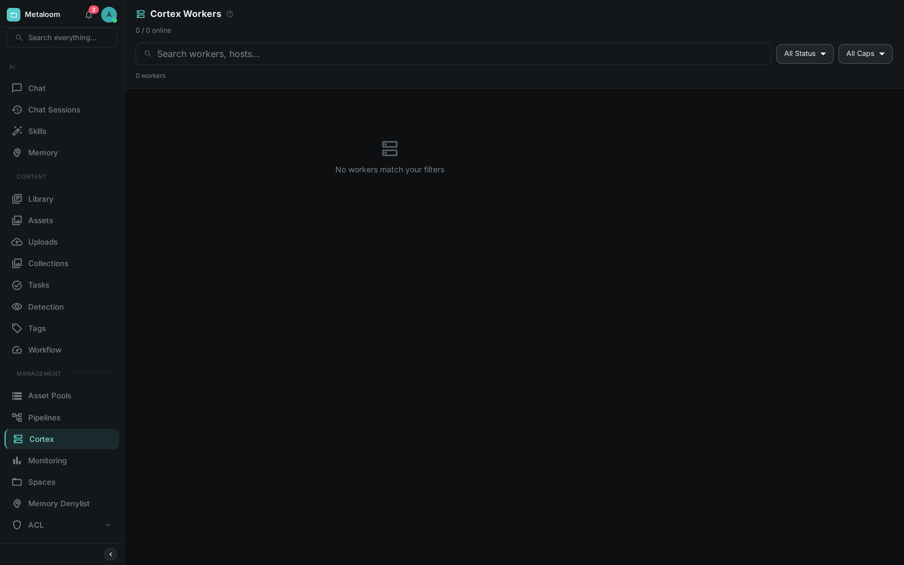
Monitoring
The monitoring area is the operational overview: a row of headline figures — assets ingested, pipeline runs, average processing latency, storage used, open tasks, agent queries and new annotations — over a 14-day rolling window, followed by the trends behind them. Asset ingestion, pipeline run outcomes (success / failed / skipped), task backlog, processing latency, storage growth and agent usage each get their own chart.
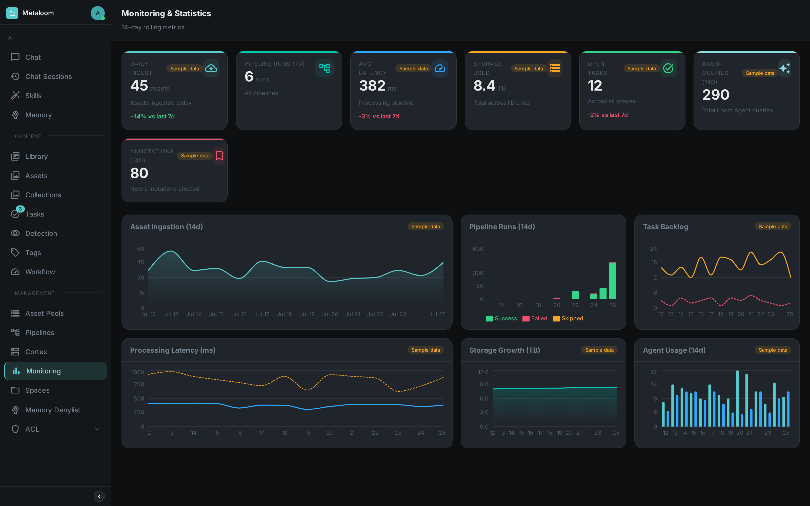
Administration
Everything that decides who may do what lives in the ACL sub-group of the Management section. Users manages accounts, status and role assignments.
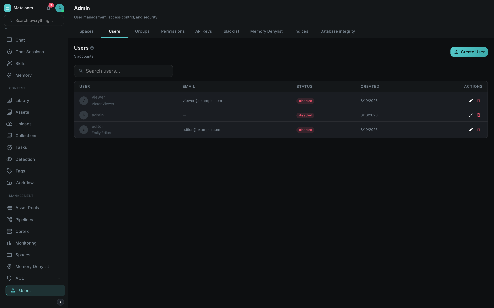
Permissions is the access-control (ACL) surface: define roles and toggle fine-grained permissions across every resource type (assets, annotations, users, and more) in a permission matrix. Each permission carries a one-line description of what it actually allows, so a role can be assembled without cross-referencing the API. Roles are assigned to users through groups.
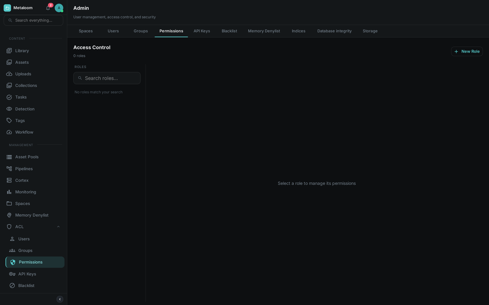
Three things are worth knowing when you assemble a role:
-
A tick is the whole story. The matrix always saves the role’s complete permission set, so unticking a box revokes that permission — it is not merely omitted from the update.
-
Changes apply immediately. Members of the role gain or lose the access on their very next request; nobody has to sign out and back in.
-
Permissions are account-wide, not per-object. Granting Read asset lets the role read every asset in the instance. To keep a set of media apart, separate it by instance rather than by role.
A role only reaches people once it is attached to a group they belong to. A role with permissions but no group grants nothing.
API Keys generates and revokes long-lived API tokens for programmatic access — see Authentication.
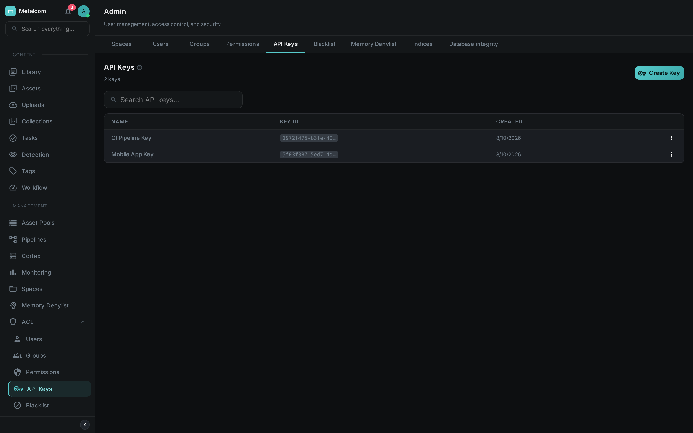
Problem Reports
Problem reports is the inbox for everything users have reported as broken.
When something fails anywhere in the UI, the message that appears carries a Report button. Pressing it opens a short form that already knows what was being attempted, which request failed, and what the server answered. The person reporting only has to add the part the server cannot know: what they expected to happen instead. They can also attach a screenshot — the browser asks which window or tab to share, the captured image is shown back before anything is sent, and it can be enlarged to check it before submitting.
Every report carries a trace ID. This is the single most useful field on the screen: the same identifier appears in the Loom server log next to the failure, so a report and its stack trace can be matched with certainty rather than by guessing from timestamps. It is also shown to the person reporting, with a copy button, so they can quote it in a support ticket without submitting anything at all.
|
Tip
|
Anybody signed in can submit a report. Reporting a failure needs no permission at all — deliberately, because the users most likely to run into a problem are often the ones with the fewest permissions. Reading the inbox does need one: |
Screenshots are stored in the database alongside the report rather than in a storage pool. That is deliberate: an unreachable storage backend is one of the things worth reporting, and a report that had to write to storage first would fail exactly when it was most needed.
Related
-
Getting Started — run the demo container and open the UI
-
Chat & AI Agent — the agent, sessions, skills, memory and coding sandbox
-
REST API — the endpoints the UI is built on
-
Authentication — login, tokens and API keys
-
Pipeline Mechanism and Nodes — what the pipeline editor builds